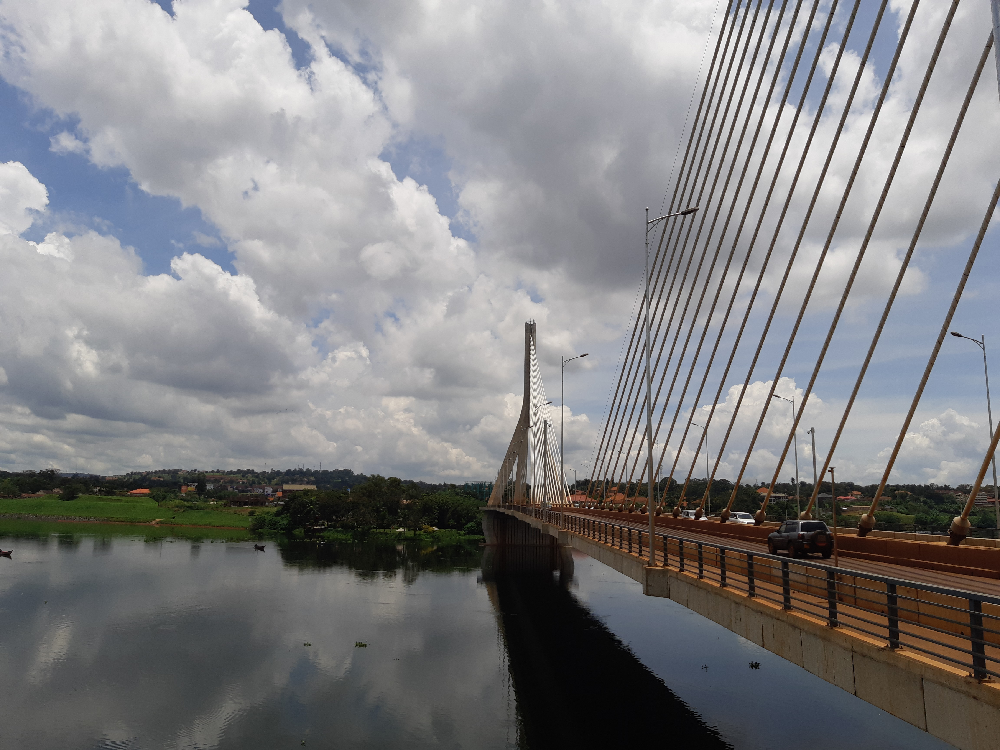

My favorite city is located in Eastern Uganda, in Busoga kingdom, Jinja District
I love Jinja City because it is near the shores of lake victoria, that makes it to be with the fresh air ever making it to be more enjoyable, Mostly at the River Nile Bridge. I like viewing the water from there.
